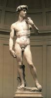
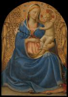
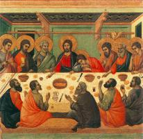

Christian Art: Українська
Старий Завіт

Адам і Єва (14)

Давид (3)
Давид (3)

Мойсей (2)

Ной (3)

Пророки (25)

Соломон (2)

Створення світу (7)

Сцени зі Старого Завіту (8)
Новий Заповіт

Іван Хреститель (9)

Апостол Павло (5)

Апостол Петро (7)

Бог Отець (3)

П’ятидесятниця (4)

Страшний суд (6)

Сцени з Нового Завіту (12)
Діва Марія

Батьки Діви (7)

Благовіщення (17)

Богородиця і Дитя (126)
Богородиця і Дитя (126)

Втеча до Єгипту (11)

Коронація Богородиці (7)

Портрет Богородиці (5)

Сцени з життя Богородиці (15)

Успіння (13)
Ісус Христос

Ісусові притчі (3)

Введеня в храм (7)

Вознесіння (3)

Воскресіння (18)

Вхід до Єрусалиму (2)

Людина скорботи (2)

Плач над Христом (22)

Поклоніння дитині (20)

Портрет Ісуса (12)

Преображення (3)

Розп'яття (31)

Різдво (8)

Служіння Ісуса (25)

Страсті Христові (33)

Таємна вечеря (5)
Таємна вечеря (5)

Хрещення Господнє (1)
Християнство

Ангели (12)

Пекло (2)

Пороки (8)

Рай (1)

Святий Франциск (43)

Святі (116)

Трійця (1)

Церква (23)

Чесноти (10)
Artists
А

Ангел Акотантос (16)
Альбрехт Альтдорфер (24)

Ульріх Апт (2)
Пітер Артсен (8)
Б
Ганс Бальдунг (26)

Дерік Бегерт (7)

Ян де Бер (6)
Д

Джотто (162)

Дуччо (80)
К
Йос ван Клеве (38)
М

Мікеланджело (36)
Р

Рафаель (117)

Андрій Ріцос (9)